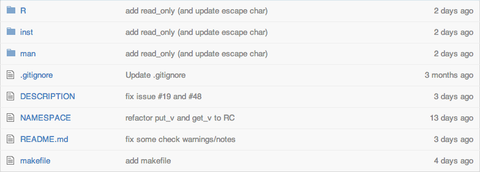

Building your own package in R
- Why!?
- Package structure
- Package documentation
- Build packages with RStudio
- (Workshop)
Thomas Reinholdsson
Swedish Pensions Agency
It's a great way to distribute and make code re-usable, not only for you, but also for others.
install.packages("Package")install.packages("Package", repos="http://R-Forge.R-project.org")devtools::install_github("Package", "User")devtools::install_bitbucket("Package", "User")
The example is taken from the Coldbir package.
R/
directory with all R code
DESCRIPTION
description file
man/
directory with package documentation generated with roxygen2
NAMESPACE
defines what functions are available to others to use, generated with roxygen2
DESCRIPTION file
Use roxygen2 to automatically generate .Rd files in the man directory

The documentation is then available by calling the help function; ?to_char.
One could also use package.skeleton() or devtools::create() to generate the initial package structure.
In addition, for writing tests look at package testthat and for work flow automatization use makefiles (not a package).